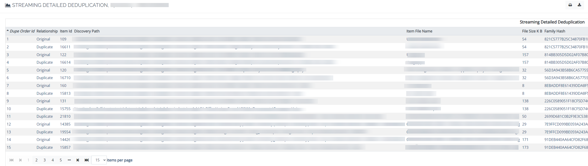

This report contains detailed de-duplication and indicates the original file a document was a duplicate of.
The De-duplication setting (Custodian, Project, or None) in the Discovery Options dialog determines the report output.
The report, in the form of a .CSV file, contains the following information:
Relationship (Original and its Duplicates)
ItemID
DiscoveryPath (original location where the file was located at time of discovery)
ItemFileName (original document filename and the duplicate copy of the original document)
FileSizeKB
FamilyHash (for Streaming, this accounts for the additional layer of de-duplication for identifying duplicate families)
ItemHashValue (this value is the equivalent of the MD5 Hash; however, Streaming uses SHA1 for de-duplication)
ProjectName
ProjectDescription
CustodianName
CustodianDescription
JobName
OriginalJobName
